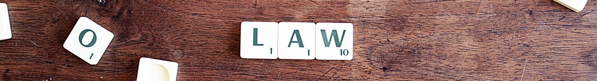
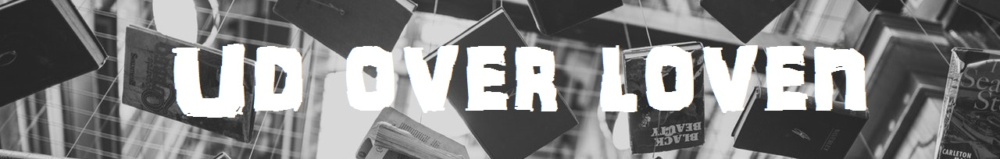

Jura
Den gældende lov i dag er eneretslovgivningen hvilket har disse love under sig;
| Ophavsretsloven |
|
| Patentloven |
| Brugsmodelloven |
| Designloven |
Denne lovgivning er lavet ved internationale konventioner, hvilket betyder at hvis man er under disse regler, er det ikke kun i ens eget land,
men i alle de lande lovene gælder i.

Ophavsret
Når man har en ophavsret på sit produkt betyder det ikke at ens ide også er sikret, man skal passe på, da andre kan bruge dine ideer uden at det vil betyde noget for dem.
Hvis man laver noget arbejde for et firma eller ligende, en der betaler dig for dit arbejde, må man ikke selv bruge ens arbejde til egen fremvisning. Der kan aftales med
den man arbejder for, at man kan bruge det, hvorfra det derfra er lovligt at bruge det.
Ophavsretten tilhøre den eller de person der har fået den. Hvis der er flere der arbejder på projektet, og eller har en ophavsret, er det kun den del de selv har lavet de
har rettighederne til.
Patent loven
Denne lov omhandler eneret til industrielle produkter, som for eksemple mekanik, elektronik, nye kendte produkter, mm.
For at man kan opnå denne ret skal ens produkt være ny, og adskille sig meget fra det der allerede eksistere i dag.
Det som denne lov
ikke gælder for er opdagelser, teorier, udregninger, mm.
Man kan både have en ophavsret og en patent lov på samme tid. En software har dog meget svært ved at opnå en patent lov.
Brugsmodeller
Denne lov minder meget om patent loven, og beskytter samme type produkter, men har ikke nær så mange restriktioner.
Denne lov kræver kun at man kan bevise at det man laver har en frembringelseshøjde, hvilket vil sige at ens produkt er noget nyt man ikke har set før. Man skal derfor passe på hvis man vil have denne form for patent. Hvis ens produkt
har vært omtalt før, i foreksemple en avis, eller i nyhederne, ses dit produkt ikke længere som noget nyt, og du kan derfor ikke få patenten denne vej.
Design Loven
Denne lov handler om udseendet af ens produkt, dette kan være hjemmesider, billeder, ikoner, grafik mm.
For at produktet kan komme under loven skal det være;
| Fremstillet industrielt eller håndværksmæssigt |
| Det skal være nyt, og indeholde individuelle karakterer |

Deeplinks
Deeplinks er når man linker til en anden side via ens egen side. Det skal man dog passe på med, da man ikke må linke til andre hjemmesider, for eksemple aviser, man normalt
skal betale for at komme ind på. I 2014 bestemte EU domstolen at man ikke måtte linke til hjemmesider der har
restriktive foranstaltninger , hvilket vil sige de
normalt vil koste penge at komme ind på.
Creative commons
Når man har en CC - Creative commons licens, betyder det at dem der har produkterne, frit kan vælge hvordan folk kan bruge deres matrialer.
Et eksemple på sådan en hjemmeside er pexel.com, der giver dig lov til at bruge deres billeder, så længe du krediterer hvor du har dem fra.
Se mere på min side om
Copy right og left.
Ansatte
Der ingåes altid en aftale med den virksomhed, eller person man bliver ansat hos. Hvis der opstår tvivl om hvem der har ophavsretten, går det til virksomheden, hvis andet ikke
kan bevises. Der kan ofte opstå problemer med kontrakter hvis et firma bliver solgt, eller for en ny form for styrrelse.
Software
For at det er muligt at få en ophavsret på en software, skal man være sikker på at de accessoriske dele af softwaren man vil have beskyttet, giver instruktioner til en maskine i maskinsprog. Hvis denne del ikke
bliver overholdt, kan man ikke være sikker på at få ens rettigheder.
Den der som regel har ophavsretten er programudvikleren, da det er ham der har det hele sat samme. Folk der kommer og laver ting til programmet har som regel igen ret til softwaren.
Selvom man sælger eller give andre lov til at ændre, eller vidreudvikle på ens program, give man ikke rettighederne til disse personer, med mindre andet er aftalt. Man har altså stadig rettighederne, selvom andre arbejder videre på det.
Selvom man i den samme koncern, vil man overdrage noget af softwaren til en anden afdeling, er der stadig en ophavsret der skal overholdes, og der skal indgåes en aftale omkring en overflytning af retten.
Anskaffelse
Når man vil søge pantent på ens matriale, er det med at være først, da andre kan søge det, og få det før dig. Dette fungere som først til mølle princippet.
Man skal være sikker på man søger patent til det rigtige område, da man kan søge patent kun i Danmark, i EU og internationalt.
Hvis man opnår patenten, får man eneret til at udnytte opfindelsen erhversmæssigt. Dette betyder at andre ikke må lave dit produkt, anvende det til egen produkt eller bruge det erhversmæssigt.
Priser og Tid
De forskellige licens aftaler koster penge. Patenten koster penge årligt, og brugsmodellen er periodisk betaling.
Patentretten er normalt på 20år.
Brugsmodellen er på 10år.
Design loven vare i 25 år, og der skal betales 2 afgifter; fornyelsesafgift og tillægsafgifter. Disse afgifter bliver betalt over 5 perioder.
Kilder;
Law billede: https://www.pexels.com/photo/activity-board-game-connection-desk-613508/
Bøger billede: https://www.pexels.com/photo/activity-board-game-connection-desk-613508/